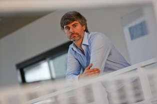
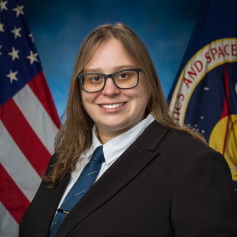
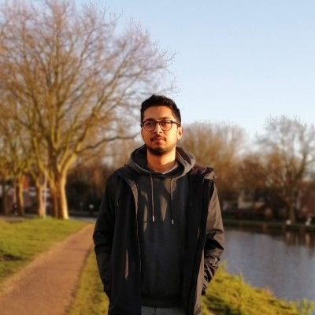
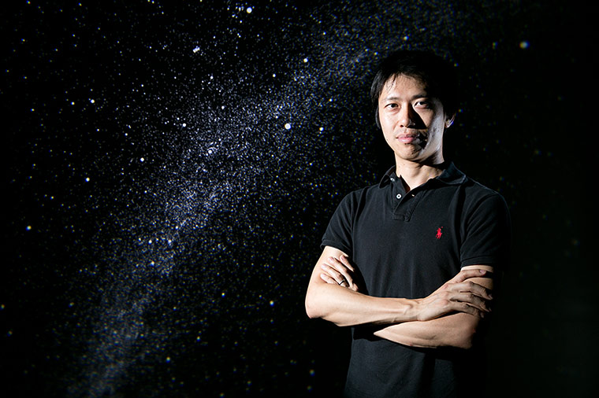
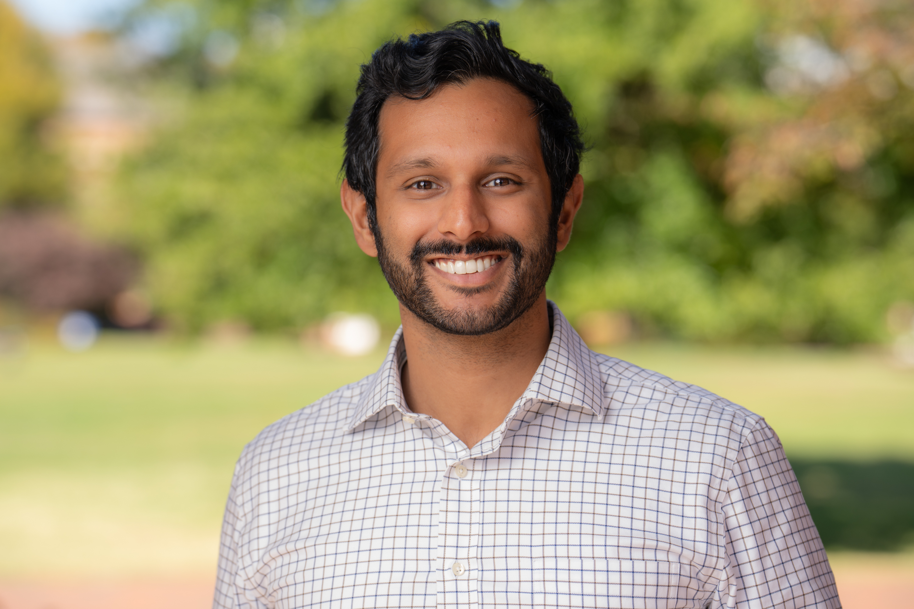

Introduction
This workshop brings together global leaders and rising experts in space robots and systems to address the challenges and opportunities of off-world autonomy. To date, more robots than people have lived and worked in space, underscoring their vital role in humanity's quest to understand, explore, and develop the universe. With global access to space rapidly expanding, new opportunities are emerging in on-orbit servicing, planetary exploration, lunar activities, resource prospecting, remote sensing, and human habitation. At the same time, advances in perception, manipulation, locomotion, mapping, and navigation for robots on Earth are accelerating the readiness of autonomy for deployment in space.
Robots are often the scouts of humanity—able to reach the most distant and hazardous regions of space—and will be essential partners in enabling humans to live and work beyond Earth. This workshop will highlight cutting-edge research and foster bold discussions on how robotics can extend human reach, open new frontiers, and help realize our long-term aspiration of exploring the universe ourselves.
Invited Speakers
-

Carlos Pérez del Pulgar
University of Málaga
-
Christian Ott
TU Wien
-
Dongheui Lee
TU Wien
-

Emma Zemler
NASA Johnson Space Center
-
Genya Ishigami
Keio University
-
Giusy Falcone
University of Michigan
-

Kuldeep Barad
Redwire Space - Luxembourg
(Listed alphabetically)
Call for Papers / Demos
We welcome submissions on space autonomy, planetary exploration, orbital robotics, earth observation, novel space hardware, and space systems. Research questions that we would like to explore are:
- What new space applications become possible through the adoption of unconventional robot morphologies such as soft and deployable designs?
- How can emerging sensing technologies and fusion methods improve perception in space robotics and expand the range of feasible applications?
- What methods should we use for estimation for space robotics, including new localization and navigation algorithms?
- How might new simulation tools, foundation models, and scene representations be applied to advance space autonomy?
- What models and architectures are best suited for Earth observation and geospatial AI?
- What unique challenges or bottlenecks exist for autonomous space robotics (data scarcity, onboard compute, environmental, edge cases), and what steps can we take as a community to improve them?
Submission Guidelines
The workshop will invite extended abstracts of up to 3 pages (excluding references, acknowledgments, and limitations), formatted in the IEEE conference template and submitted via OpenReview. All authors of contributions need to have an account on OpenReview in order to submit an abstract. Submissions will be reviewed in a double-blind process by workshop organizers and attendees. Please, make sure your submission complies with the IEEE RAS double-blind peer review guidelines. Not adhering to these guidelines can result in the submission being desk rejected. Each submission must nominate one author as reviewer to evaluate two other contributions, following a reciprocal review model. Reviewer assignments will use OpenReview's assignment system, optimizing objectives such as semantic relevance and conflict of interest detection. Accepted abstracts will be published on the workshop website and presented as posters. We request authors of accepted works to prepare a poster (preferred size: landscape A0 format, which is 119 x 84 cm (46" wide x 33" high); max. size: 195 x 130 cm (76" wide x 51" high)) and a 90-second video summarizing their work, which will be showcased during the spotlight sessions and made available on the workshop website. Brief Q&As will follow each spotlight for those authors available in person during the workshop. Please note the deadline for submitting the spotlight presentation videos and poster designs is May 18, 2026. We encourage submissions of in-progress work and extensions of previously published material; originality is welcome but not required.
Note: ICRA 2026 conference policy requires that all presenters of accepted abstracts must register for workshops.
Submission PortalTimeline
- Submission Portal Opens: Feb 1, 2026
- Submission Deadline:
Apr 3, 2026(updated!) Apr 10, 2026 11:59 p.m. (Anywhere On Earth) - Notification of Acceptance: Apr 27, 2026*
- Camera-Ready Deadline:
May 8, 2026(updated!) May 9, 2026 11:59 p.m. (Anywhere On Earth) - Spotlight Presentation Videos and Poster Design deadline:
May 18, 2026(updated!) May 25, 2026 11:59 p.m. (Anywhere On Earth) - Workshop Date: Jun 5, 2026
*If you are expecting longer visa processing timeline due to your home country, please email the workshop organizers to discuss an expedited review timeline.
Workshop Schedule
| Time (UTC+2) | Event |
|---|---|
| 08:30 - 08:45 | Opening Remarks |
| 08:45 - 09:15 | Carlos Pérez del Pulgar - Challenges on Robotic Exploration of Lava Caves on the Moon and Mars |
| 09:15 - 10:00 |
Accepted Abstracts Spotlight: Locomotion, Manipulation, & Control
Poster Overview [09:45 - 10:00] |
| 10:00 - 11:00 | Coffee Break + Poster Session 1 |
| 11:00 - 11:30 | Kuldeep Barad - Perception and Autonomy: A Space Industry Perspective |
| 11:30 - 12:00 | Giusy Falcone - Weak‑Force Actuation for Space Mobility: Attitude, Drag, and Lasers |
| 12:00 - 12:30 | Dongheui Lee - Robot Learning and Shared Autonomy for Lunar Assembly Tasks |
| 12:30 - 13:30 | Lunch Break - Joint with the Workshop on Perceptual Challenges for Planetary Exploration |
| 13:30 - 13:45 | Introduction to the Afternoon Session |
| 13:45 - 14:15 | Genya Ishigami - From Explorers to Builders: Design and Demonstration of Robotic Mobility and Tools for Lunar ISRU and Construction |
| 14:15 - 14:25 | Guest Spotlight: Emma Zemler - NASA Ignition and iMETRO (Integrated Mobile Evaluation Testbed for Robotics Operations) |
| 14:25 - 15:00 |
Accepted Abstracts Spotlight: Navigation & Perception
Poster Overview [14:55 - 15:00] |
| 15:00 - 16:00 | Coffee Break + Poster Session 2 |
| 16:00 - 16:30 | Christian Ott - Increasing Transparency in Teleoperation Under Large Time-Delays for Orbital and Planetary Space Applications |
| 16:30 - 17:15 | Panel Discussion / Round Table |
| 17:15 - 17:30 | Closing Remarks |
Note: Underlined author names indicate the presenting author for each paper.
Organizers
-
Holly Dinkel
Samsung Research America
-
Julia Di
Lockheed Martin Space Advanced Technology Center
-
Su-Yeon Choi
Republic of Korea Army Research Center
-
David Rodríguez-Martínez
University of Málaga
-

Carol Martinez
University of Luxembourg
-
Keenan Albee
University of Southern California
-
Yasmin Ansari
Istituto Italiano di Tecnologia
-
Lennart Puck
ESA
-

Hiro Ono
NASA Jet Propulsion Laboratory
-

Abhishek Cauligi
Johns Hopkins University
Location
Conference Venue: ICRA 2026 • City: Vienna, Austria • Room: Lehar 3
Poster Stand Numbers: TBD • Please check onsite signage for details.
Organizational Support Committee
Thank you to our organizational support committee member, Ignacio López-Francos, for helping publicize and source high-quality reviews.
Contact
For questions and comments, please contact the organizers: space-robotics-workshop@googlegroups.com